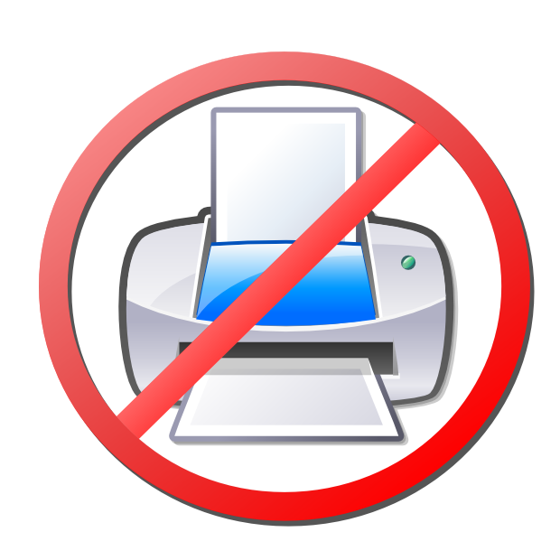

Basic Logging Tutorial for Python
A while back, I wrote an entry where part of it describes a how to on logging in Python. If that was a super basic tutorial on logging, this one kicks it up a notch as a regular basic tutorial!
What is it?
I guess the first question we need to answer is, what exactly is logging. If my 5 year old niece asked me to describe it, I would say "It's basically writing what happens to a file". Just like you might record a workout log to keep track of how you're doing, including when you fail, you can do the same with an application or program. So this is often used to record when there's an error or pretty much when something breaks.

Why not just 'print'
Well I could just print it to the console can't I? Well you can, but what if you're running a scraping program with thousands or more queries. It's much more convenient to have it available to you, always, in a file. Though you could technically log to the console as well. As a program or file gets more complex, logging is a necessary tool for debugging.

Okay, enough with the lame pics, just tell me how to LOG already!
Okay, okay, sheesh! Logging is really easy in Python beause it's built right into it. The standard Python logging module is built in and accessible by an easy import:
import logging
logging.basicConfig(filename='debug.log',level=logging.DEBUG)
This is the most basic way to write logs to a file. The filename attribute is where the log will get saved, DUH, and the level is which level of errors you would like to be logged. The order of logging levels from lowest to highest is: DEBUG, INFO, WARNING, ERROR, CRITICAL. So if I set the level at WARNING, I would get all WARNING, ERROR, and CRITICAL level logs while DEBUG and INFO would be ignored. For now, since we want them all, let's sit it to DEBUG.
There you go, now your system is setup to begin logging! So how do you actually make your program log? Also not that hard!
logger.debug("Starting the scrape")
logger.info("Finished scraping critic")
logger.warning("Critic url does not exist")
logger.critical("Save yourself while you still have time")
Try to run this and see if it's creating/writing into debug.log. If it is, maybe we can move onto a slightly more advanced logging idea: Rotating File Handlers.
This Picture Has Nothing to do with File Handlers
While the above example works perfectly for small functions or modules, when things get more complex, we will need something a little bit more heavy duty. One of the ways we do that is by using RotatingFileHandler, which is a logging handler. We will also be formatting the log files. Now how do we do this?
import logging
import logging.handlers
# Pick minimum level of reporting logging
LEVEL = logging.DEBUG
# Format to include when, who, where, what
formatter = logging.Formatter('%(asctime)s - %(name)s - %(levelname)s - %(message)s')
# Name is module name
logger = logging.getLogger(__name__)
logger.setLevel(LEVEL)
# Create file size limit and file name
handler = logging.handlers.RotatingFileHandler('debug.log', maxBytes=2000000, backupCount=20)
handler.setLevel(LEVEL)
handler.setFormatter(formatter)
# Add handler to logger
logger.addHandler(handler)
Let's go over this code line by line.
LEVEL = logging.DEBUG
Here we are picking a level for logging just like above.
formatter = logging.Formatter('%(asctime)s - %(name)s - %(levelname)s - %(message)s')
In this part, we are picking a formatting for our log so that when we look at it later on it'll make more sense.
Rotating Log Handler
handler = logging.handlers.RotatingFileHandler('debug.log', maxBytes=2000000, backupCount=20)
Now this is where it gets trickier. The RotatingFileHandler lets you define what you want the maxsize of a file to be and how many files you want to keep backed up. RotatingFileHandler writes the logs to iterations of the log file with the newest logs going in the smaller numbered files. So it will basically fill up debug.log first. Once that's filled up, debug.log will be renamed to debug.log.1. Then debug.log will be wiped and then filled with new data. This will happen till it gets to the backupCount, at which point it'll stop keeping tracking of the older logs.
handler.setLevel(LEVEL)
handler.setFormatter(formatter)
logger.addHandler(handler)
And finally let's put it all together by adding the formating and handling we just defined above. Now our code can log like an expert!
Keeping Track of Where We Are
One use of logging is to use it to keep track of where we are so that we can estimate more accurately how much time is remaining.
for review in soup.find_all('div', class_='review_wrap'):
logger.debug("Starting the scrape for " + review)
Try and Except
One of the best places to use logging is in the except part of a try/except block.
try:
pubs_list = [pub.a.text.strip() for pub in critic_element.find_all(class_="source")]
except Exception:
logging.exception("Publications cannot be found for critic")
Many More Use Cases
There are a lot more use cases for logging! Here is a link to Python's documentation for Logging. Happy logging!
What I Learned Today:
There is a Lumberjack World Championships.